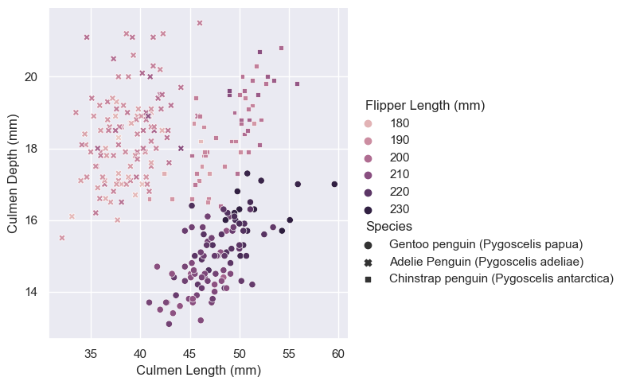

In this blog post, I will be training some machine learning models on the Palmer Penguins data set. The goal is to find a model trained with three of the features in the data set that achieves 100% testing accuracy.
1. Explore
Here is an overview of the Palmer Penguins data set:
import pandas as pdtrain_url ="https://raw.githubusercontent.com/middlebury-csci-0451/CSCI-0451/main/data/palmer-penguins/train.csv"train = pd.read_csv(train_url)train.head()
studyName
Sample Number
Species
Region
Island
Stage
Individual ID
Clutch Completion
Date Egg
Culmen Length (mm)
Culmen Depth (mm)
Flipper Length (mm)
Body Mass (g)
Sex
Delta 15 N (o/oo)
Delta 13 C (o/oo)
Comments
0
PAL0708
27
Gentoo penguin (Pygoscelis papua)
Anvers
Biscoe
Adult, 1 Egg Stage
N46A1
Yes
11/29/07
44.5
14.3
216.0
4100.0
NaN
7.96621
-25.69327
NaN
1
PAL0708
22
Gentoo penguin (Pygoscelis papua)
Anvers
Biscoe
Adult, 1 Egg Stage
N41A2
Yes
11/27/07
45.1
14.5
215.0
5000.0
FEMALE
7.63220
-25.46569
NaN
2
PAL0910
124
Adelie Penguin (Pygoscelis adeliae)
Anvers
Torgersen
Adult, 1 Egg Stage
N67A2
Yes
11/16/09
41.4
18.5
202.0
3875.0
MALE
9.59462
-25.42621
NaN
3
PAL0910
146
Adelie Penguin (Pygoscelis adeliae)
Anvers
Dream
Adult, 1 Egg Stage
N82A2
Yes
11/16/09
39.0
18.7
185.0
3650.0
MALE
9.22033
-26.03442
NaN
4
PAL0708
24
Chinstrap penguin (Pygoscelis antarctica)
Anvers
Dream
Adult, 1 Egg Stage
N85A2
No
11/28/07
50.6
19.4
193.0
3800.0
MALE
9.28153
-24.97134
NaN
Upon intuition, I am guessing that the species of a penguin might be related to which island they live on and their physiological measures. To test my guess, I will make some tables and figures using these variables.
There is a clear pattern in the island that different species of penguins inhabit. Adelie is found on all three islands, whereas Chinstrap is only found on Dream and Gentoo is only found on Biscoe.
Physiological measures
import seaborn as snssns.set_theme()sns.relplot(data = train, x ="Culmen Length (mm)", y ="Culmen Depth (mm)", hue ="Flipper Length (mm)", style ="Species")
<seaborn.axisgrid.FacetGrid at 0x7fd323a6f310>

This figure shows the relationship between three of the physiological measures of a penguin (culmen depth, culmen length, flipper length) and their species.
The three species form nice clusters on the graph. This tells us that we can do a good job predicting them using culmen depth and length, as we can separate species using the x and y coordinates easily.
There is also a pattern in the color of the clusters: Gentoo has the deepest colors, followed by Chinstrap. Therefore, flipper length is also likely correlated with species.
2. Model
Data preparation
I start by preparing the training data using the code provided by Professor Phil:
In the following for-loops, I train and score all possible combinations of 1 qualitative + 2 quantitative features using cross-validation. I choose to start with the logistic regression model.
from warnings import simplefilterfrom sklearn.exceptions import ConvergenceWarningsimplefilter("ignore", category=ConvergenceWarning)from itertools import combinationsfrom sklearn.model_selection import cross_val_scorefrom sklearn.linear_model import LogisticRegressionimport numpy as np# these are not actually all the columns: you'll # need to add any of the other ones you want to search forall_qual_cols = ["Clutch Completion", "Sex", "Island", "Stage"]all_quant_cols = ['Culmen Length (mm)', 'Culmen Depth (mm)', 'Flipper Length (mm)', 'Body Mass (g)', 'Delta 15 N (o/oo)', 'Delta 13 C (o/oo)']cv_max =0;best_features = [];for qual in all_qual_cols: qual_cols = [col for col in X_train.columns if qual in col ]for pair in combinations(all_quant_cols, 2): cols =list(pair) + qual_cols# fit model LR = LogisticRegression() LR.fit(X_train[cols], y_train)# cross-validation cv_scores = cross_val_score(LR, X_train[cols], y_train, cv =5) cv_mean = cv_scores.mean()# update top 3 cv scores and best features listif cv_mean > cv_max: cv_max = cv_mean best_features = cols;print("Best CV score = ", cv_max)print("Best features = ", best_features)
Best CV score = 0.996078431372549
Best features = ['Culmen Length (mm)', 'Culmen Depth (mm)', 'Island_Biscoe', 'Island_Dream', 'Island_Torgersen']
It seems that the best cross-validation score we can get using logistic regression is 0.996.
Next, I will try a few other machine learning models and see if we can get even higher scores. #### Decision tree
from sklearn.tree import DecisionTreeClassifiercv_max =0best_features = []best_depth =0for qual in all_qual_cols: qual_cols = [col for col in X_train.columns if qual in col ]for pair in combinations(all_quant_cols, 2): cols =list(pair) + qual_colsfor d inrange(2, 30):# fit model DTC = DecisionTreeClassifier(max_depth = d) DTC.fit(X_train[cols], y_train)# cross-validation cv_scores = cross_val_score(DTC, X_train[cols], y_train, cv =5) cv_mean = cv_scores.mean()# update top 3 cv scores and best features listif cv_mean > cv_max: cv_max = cv_mean best_features = cols best_depth = dprint("Best CV score = ", cv_max)print("Best features = ", best_features)print("Best max depth = ", best_depth)
Best CV score = 0.9803921568627452
Best features = ['Culmen Length (mm)', 'Culmen Depth (mm)', 'Island_Biscoe', 'Island_Dream', 'Island_Torgersen']
Best max depth = 4
Using the decision tree method, the best CV score we can achieve is 0.98, a little lower than with logistic regression. The best features are the same as what we got from searching through logistic regression models. The max depth that would allow the best CV score turns out to be 4.
Random forest
from sklearn.ensemble import RandomForestClassifiercv_max =0;best_features = [];for qual in all_qual_cols: qual_cols = [col for col in X_train.columns if qual in col ]for pair in combinations(all_quant_cols, 2): cols =list(pair) + qual_cols# fit model RF = RandomForestClassifier() RF.fit(X_train[cols], y_train)# cross-validation cv_scores = cross_val_score(RF, X_train[cols], y_train, cv =5) cv_mean = cv_scores.mean()# update top 3 cv scores and best features listif cv_mean > cv_max: cv_max = cv_mean best_features = cols;print("Best CV score = ", cv_max)print("Best features = ", best_features)
Best CV score = 0.9843137254901961
Best features = ['Culmen Length (mm)', 'Culmen Depth (mm)', 'Island_Biscoe', 'Island_Dream', 'Island_Torgersen']
We again get the same set of best features from searching all possible random forest models. The best CV score is very close to what we got from the decision tree classifiers.
Support vector machine
from sklearn.svm import SVCcv_max =0best_features = []best_gamma =0for qual in all_qual_cols: qual_cols = [col for col in X_train.columns if qual in col ]for pair in combinations(all_quant_cols, 2): cols =list(pair) + qual_colsfor g in np.float_power(10, np.arange(-5, 5)):# fit model SVC_ = SVC(gamma = g) SVC_.fit(X_train[cols], y_train)# cross-validation cv_scores = cross_val_score(SVC_, X_train[cols], y_train, cv =5) cv_mean = cv_scores.mean()# update top 3 cv scores and best features listif cv_mean > cv_max: cv_max = cv_mean best_features = cols best_gamma = gprint("Best CV score = ", cv_max)print("Best features = ", best_features)print("Best gamma = ", best_gamma)
Best CV score = 0.984389140271493
Best features = ['Culmen Length (mm)', 'Culmen Depth (mm)', 'Island_Biscoe', 'Island_Dream', 'Island_Torgersen']
Best gamma = 0.1
Finally, I search through all possible feature combinations and gamma values from \(10^{-5}\) to \(10^5\). The best model turns out to be trained with the same set of features as the rest of the models, with gamma = 0.1.
Summary
It seems that with any of the four models, the most predictive features are always culmen length, culmen depth, and island. I wonder if this applies to other machine learning models in general – is there always a set of “best” features to use regardless of the model choice?
Comparing the cross-validation scores of all four models, it looks like they have similar performance. Logistic regression is slightly outperforming the rest. Next, I will try applying the best candidates from each of the four model types to testing data and see if they have similar testing accuracy as well.
With the testing data, we reached 1.0 accuracy using logistic regression.
The decision tree and random forest models also had pretty good accuracy, close to what the cross-validation scores suggest.
The accuracy from SVC is a little lower than anticipated since the CV score from training data is higher by ~0.03.
3. Evaluate
Finally, I will plot the decision regions of all four selected models. I will compare them and try to understand what makes logistic regression the best of them with this data set.
from matplotlib import pyplot as plt
from matplotlib.patches import Patchdef plot_regions(model, X, y): x0 = X[X.columns[0]] x1 = X[X.columns[1]] qual_features = X.columns[2:] fig, axarr = plt.subplots(1, len(qual_features), figsize = (7, 3))# create a grid grid_x = np.linspace(x0.min(),x0.max(),501) grid_y = np.linspace(x1.min(),x1.max(),501) xx, yy = np.meshgrid(grid_x, grid_y) XX = xx.ravel() YY = yy.ravel()for i inrange(len(qual_features)): XY = pd.DataFrame({ X.columns[0] : XX, X.columns[1] : YY })for j in qual_features: XY[j] =0 XY[qual_features[i]] =1 p = model.predict(XY) p = p.reshape(xx.shape)# use contour plot to visualize the predictions axarr[i].contourf(xx, yy, p, cmap ="jet", alpha =0.2, vmin =0, vmax =2) ix = X[qual_features[i]] ==1# plot the data axarr[i].scatter(x0[ix], x1[ix], c = y[ix], cmap ="jet", vmin =0, vmax =2) axarr[i].set(xlabel = X.columns[0], ylabel = X.columns[1]) patches = []for color, spec inzip(["red", "green", "blue"], ["Adelie", "Chinstrap", "Gentoo"]): patches.append(Patch(color = color, label = spec)) plt.legend(title ="Species", handles = patches, loc ="best") plt.tight_layout()
Comparing the decision regions of different models, it seems that the errors of the last three models almost exclusively come from the separation between the two species on the second island. There are a few green points right next to the blue ones, which were only correctly classified by logistic regression.
I can see how this creates a problem for decision tree and random forest – since they only create separation lines at two directions (along the x axis or y axis), it would be hard for them to be precise where the two clusters are extremely close to each other.
For the support vector classifier, however, I am curious about what makes it the least accurate, at least for this data set. Is this by nature of some characteristics of this model or just by chance?